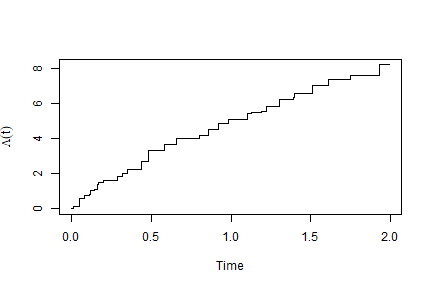

Regression analysis of panel count data: recurrent events observed only at intermittent examination times, so that you know how many events happened between visits but not when. pcdreg fits the two semiparametric models used for these data, allowing the covariates to vary over time.
| Model | Fitted by | |
|---|---|---|
panelrate() |
nonparametric maximum likelihood, via EM | |
panelmean() |
estimating equations |
panelrate() implements the estimation and covariance methods of Sun, Guo, Li, Tu and Sun (2024), Bernoulli 30(4), 3251–3275; panelmean() implements Hu, Sun and Wei (2003), Scandinavian Journal of Statistics 30(1), 25–43, the comparator used in that paper’s application.
With time-varying covariates the two are not reparametrisations of each other, so their coefficients answer different questions rather than estimating one common quantity.
Why the rate model
With time-varying covariates the competing proportional means model requires to be non-decreasing, which is awkward to guarantee when covariate values fluctuate, and its predicted mean curves need not be monotone. The rate model only needs the right hand side to be positive, so predicted means are non-decreasing by construction, and reads as an instantaneous relative risk in the same way a hazard ratio does in survival analysis.
Installation
# install.packages("remotes")
remotes::install_github("dayusun/pcdreg")Usage
Data go in counting process form, one row per interval over which the covariates are constant. A row whose count is a number records an examination at tstop; a row whose count is NA records only that a covariate changed.
library(pcdreg)
set.seed(1)
d <- r_panel_count(150, beta = c(1, -1), lambda = function(t) 8 / (1 + t))
head(d)
#> id tstart tstop count x1 x2
#> 1 1 0.000000 0.380000 1 0.8983897 0.6607978
#> 2 1 0.380000 1.070000 3 0.8983897 0.6607978
#> 3 1 1.070000 1.258228 NA 0.8983897 0.6607978
#> 4 1 1.258228 1.700000 4 0.9446753 0.6607978
#> 5 2 0.000000 0.210000 2 0.7829328 0.5297196
#> 6 2 0.210000 0.800000 2 0.7829328 0.5297196
fit <- panelrate(pcd(id, tstart, tstop, count) ~ x1 + x2, data = d)
summary(fit)
#>
#> Call:
#> panelrate(formula = pcd(id, tstart, tstop, count) ~ x1 + x2,
#> data = d)
#>
#> Proportional rate model for panel count data
#> Standard errors: robust sandwich
#>
#> Estimate Std. Error z value Pr(>|z|)
#> x1 1.1810 0.1270 9.303 <2e-16
#> x2 -1.0283 0.1056 -9.738 <2e-16
#>
#> 150 subjects, 631 examinations, 1169 events, 187 distinct examination times.
#> Log likelihood -830.8 in 312 EM iterations.If covariates are time-invariant, one row per examination is enough and the three argument form fills in the interval starts:
Choosing a covariance estimator
Estimation maximises the likelihood a Poisson process would give, but that assumption is only a working device. Three covariance estimators are available:
vcov(fit, type =) |
What it is | Needs the Poisson assumption? |
|---|---|---|
"robust" (default) |
sandwich | no |
"information" |
efficient information | yes |
"profile" |
Murphy–van der Vaart profile likelihood | yes |
When counts are overdispersed relative to Poisson, which is the usual situation, the last two understate the standard errors, sometimes by a factor of five or more. The robust estimator costs nothing extra beyond quantities the EM algorithm has already produced.
set.seed(2)
od <- r_panel_count(150, frailty = 1) # gamma frailty: not a Poisson process
odfit <- panelrate(pcd(id, tstart, tstop, count) ~ x1 + x2, data = od)
rbind(robust = sqrt(diag(vcov(odfit, "robust"))),
information = sqrt(diag(vcov(odfit, "information"))))
#> x1 x2
#> robust 0.3044926 0.33010802
#> information 0.0465893 0.03599234The baseline and predictions
head(baseline(fit))
#> time jump cumrate
#> 1 0.01 1.235997e-01 0.1235997
#> 2 0.02 0.000000e+00 0.1235997
#> 3 0.03 0.000000e+00 0.1235997
#> 4 0.04 6.947206e-35 0.1235997
#> 5 0.05 4.677466e-01 0.5913463
#> 6 0.06 4.839548e-67 0.5913463
plot(fit)
The means model
panelmean() takes the same formula and returns an object supporting the same methods. It needs only the examination times, so it is much cheaper to fit.
mfit <- panelmean(pcd(id, tstart, tstop, count) ~ x1 + x2, data = d)
cbind(rate = coef(fit), mean = coef(mfit))
#> rate mean
#> x1 1.181028 0.6398457
#> x2 -1.028303 -0.9919493Nothing constrains its fitted mean function to increase, and with covariates that fluctuate it generally does not — the drawback of the means model that motivates the rate model:
mu <- baseline(mfit)$mean
c(increasing = !is.unsorted(mu), decreases_at = sum(diff(mu) < 0))
#> increasing decreases_at
#> 0 98Citation
citation("pcdreg")